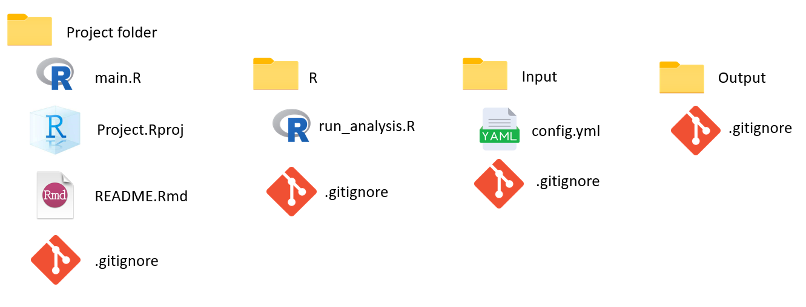
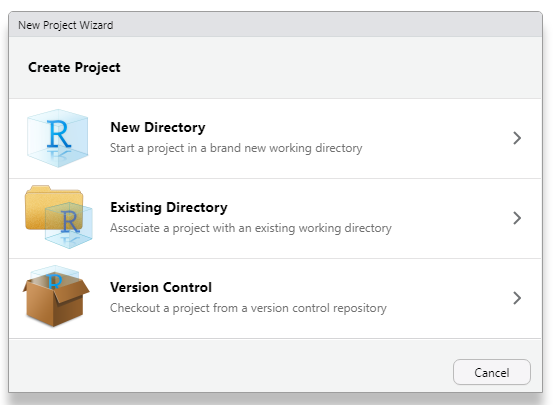
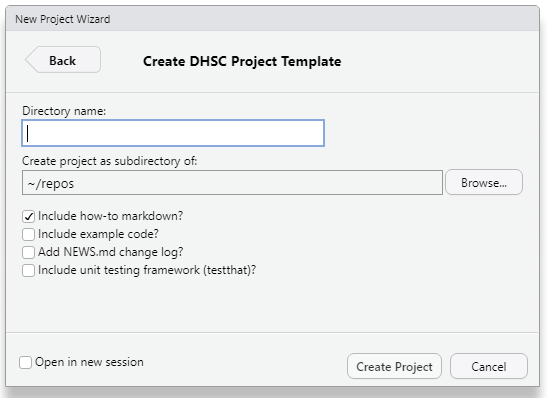

3 DHSC RAP Template
The DHSC RAP template provides you with the basic file structure for you RAP
The template provides a series of useful files to remove some the intial overhead when starting a new project.
The RAP template can be accessed through the
DataS-DHSC/DHSCtoolspackage hosted on Github.
The first step to producing your RAP is creating an R project in RStudio. An R project makes it easy to move your work between different directories without having to change absolute file paths. In DHSC we have developed a project template that can be used instead of the standard version, and provides extra features.
The DHSC project template is intended to embed a standard approach to R programming at DHSC and adheres to coding best practice as set out by the UK Government Analytical Community - Quality assurance of code for analysis and research.
The template creates a project structure that closely follows that enforced by R packages. This allows the use of automated features such as documenting and unit testing of code as well as simplifying the process of converting code to a package if needed.
The template gives you the basic file structure for your RAP, along with a variety of files that will be useful as you develop your pipeline. This removes some of the overhead in having to create these yourselves, and acts a reminder to include elements of best practice.
The next section will give a more in depth look at what is contained in the template. If you just want to know how to install it, click here.
3.1 Template Structure
The aim is to write your code in a way to make it reproducible and easy to follow, with a consistent folder structure across different projects.
The template contains several folders.
The central project folder, with your key files.
An R folder in which to store the scripts containing the analysis functions.
An input folder in which to store your data and any input parameters.
An output folder in which you save your RAP outputs.
The template provides a series of useful files to help you build your RAP. The key ones we’ll cover in this book are:
main.r- This is the script from which you will run your code, initialise your packages, and start your logging.Rproj- This is an RStudio project file, which helps keep your RAP self contained, and avoids the need for absolute file paths which are not transferable between different users.README.Rmd- This is a document in which you will explain your project, how it works and how to run in..gitignore- While version control is essential, not all files can be shared. The gitignore files allows you to specify which files will not be pushed into a remote repo.config.yml- A config file allows you to change parameters without needing to edit the code itself. It is written in YAML, a simple structured data language.

3.2 Using the template - Best practice
Use the main.R script to source and call the main function used to run your analysis and set up your environment, logging, and dependencies (using the librarian package). Using a standard entry point to running the analysis will help others understand and run your code more quickly and also enforces the use of modular functions.
All other scripts should be saved in the ./R folder with code structured into separate files containing logically grouped functions. For non-packaged projects, please add a section to the start of each file that explicitly loads all dependencies (either using the library and source function for smaller projects or the box and renv packages for larger projects).
Store input parameters and settings in the ./input/config.yml YAML file and sensitive parameters in the .REnviron file (this file is not version controlled by default in the template).
Store input data and settings in the ./input folder and write any output from the analysis to the ./output folder. These folders contain .gitignore files which prevent their contents from being version controlled (with the exception of ./input/config.yml).
For small projects, we recommend using the librarian package and base R source function to manage dependencies; for larger projects we would recommend using the renv and box packages for dependency management as well as considering packaging the project itself on GitHub.
3.3 Installing the DHSCtools package
There are two packages required for this exercise. The first is devtools. If you do not have it installed, it can be installed like a typical package using the following command:
install.packages("devtools")You will then need to load the library:
library(devtools)The second package required is the DHSC-developed tools package, which will need to be installed from GitHub. When installing packages from GitHub, you need to remember to include both the author and the name of the package. In this case, the author is DataS-DHSC, and the name of the package is DHSCtools, like so:
install_github("DataS-DHSC/DHSCtools")Make sure for follow any instructions in the console during installation.
One the package is installed, load the library:
library(DHSCtools)3.4 Set up your Template
After installing the package, to use the DHSC project template go to File > New Project… then select New Directory followed by DHSC Project Template. Make sure to untick the “Include example code?” checkbox.



The optional example code contains similar examples to those in this book, but including them here may cause some confusion later.
In this section, you’ll set up a project template of your own. Using any required steps above, you should:
Install the required packages.
Download the RAP template and create a project.